Root
A therapeutic tool that asks you one question at a time until you hit the root of what you're really feeling.
Made testers cry.


Overview
Root is a web app I designed and built in fall 2025 to make a therapeutic process I use in my own life more accessible to others. It’s live at digtotheroot.com and anyone can use it. The concept is simple: you tell Root what’s on your mind, and it asks you one follow-up question at a time, gently helping you peel back the layers until you reach the root of what you’re really feeling. It’s made me cry. It’s made my mom cry. It’s made friends and testers cry. Not because it’s upsetting — because it works.
Role & Scope
Solo project. I handled concept development, UX design, prompt engineering, frontend development, and user testing.
The Problem
In therapy, I learned a process of digging beneath surface emotions to find what’s really going on underneath. The idea is that many emotions are secondary — anger, for example, is often covering up fear. By asking yourself “what’s underneath that?” over and over, you can work your way down to the root cause of what you’re feeling. This process has been incredibly helpful for me. I can do it through journaling, but it’s hard to play both roles at once — the person asking the probing questions and the person sitting with the emotions. Those are two very different headspaces, and switching between them breaks the flow. I’d tried using AI assistants like ChatGPT to ask me the follow-up questions, and the technique actually translated well. But the environment didn’t. Sitting in a chat interface surrounded by the context of every other thing I’ve asked an AI — code questions, random lookups, work tasks — didn’t feel like a space where I could be personally vulnerable. The tool worked, but the experience around it didn’t.
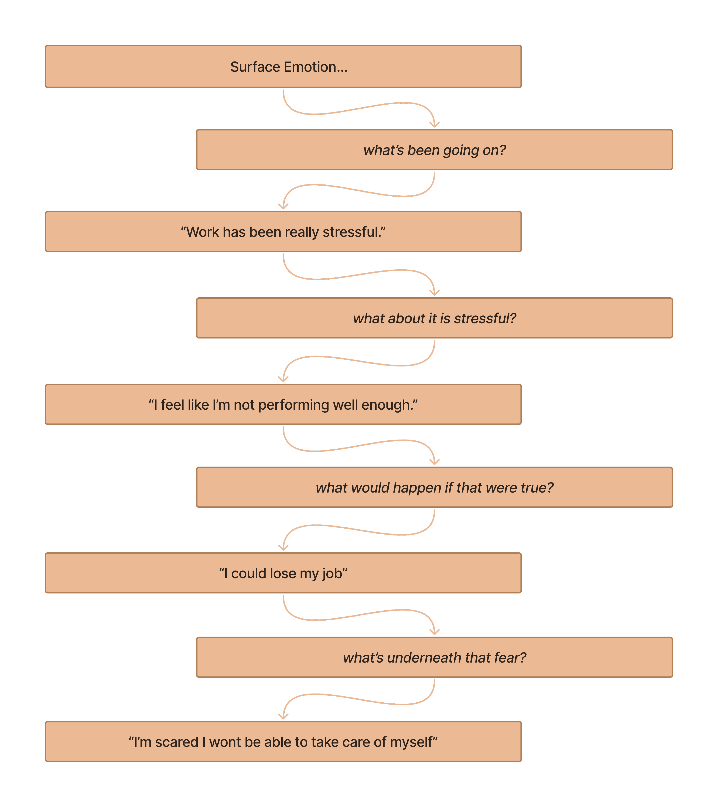
Process
Designing the Experience
I started in Figma, but the design decisions here were less about layout and more about tone. The entire interface needed to feel calm, safe, and focused. I landed on a cool gray palette, minimal UI, and a single interaction at the center of the screen. No sidebars, no menus, no distractions. Just a question and space to respond.
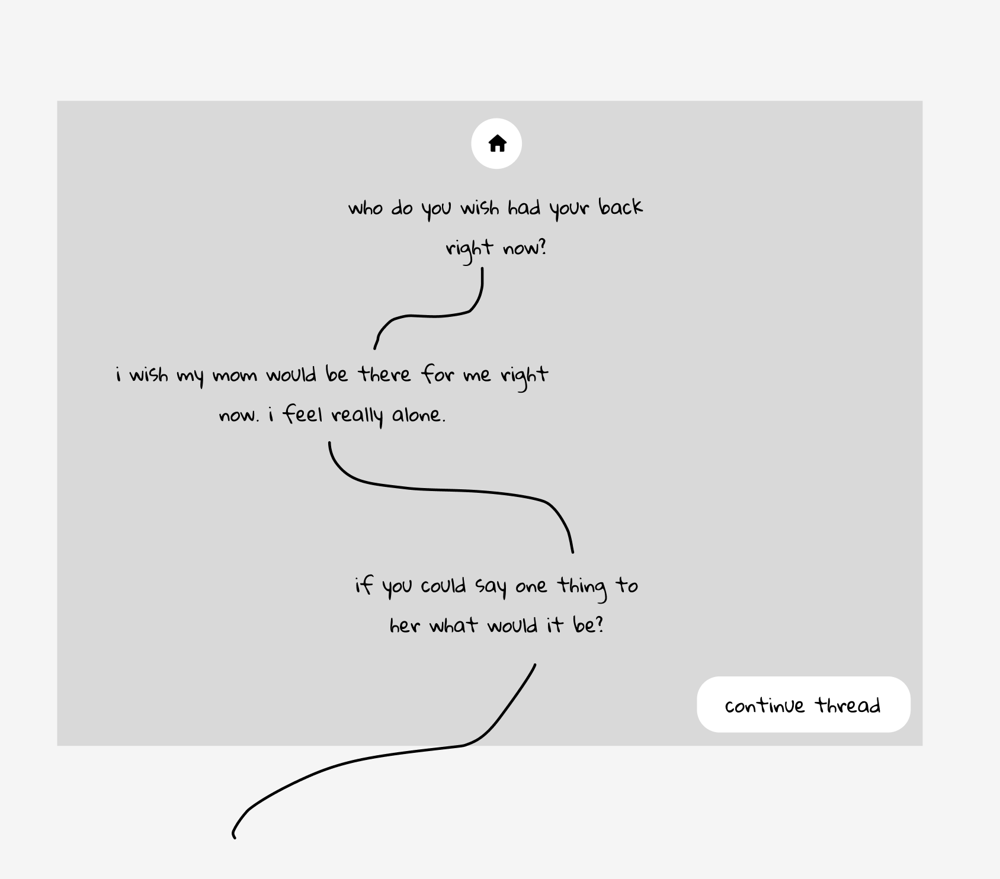
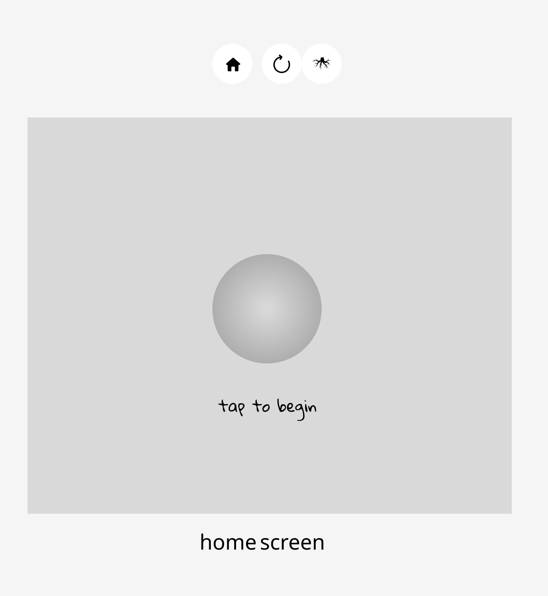
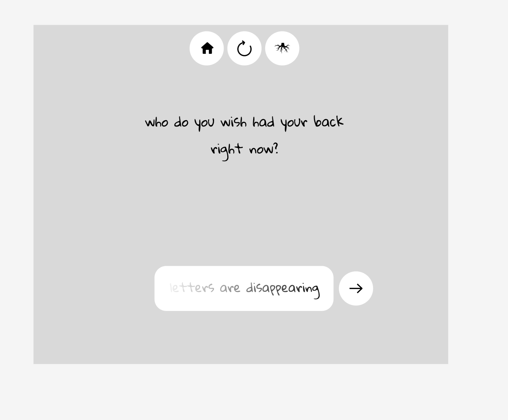
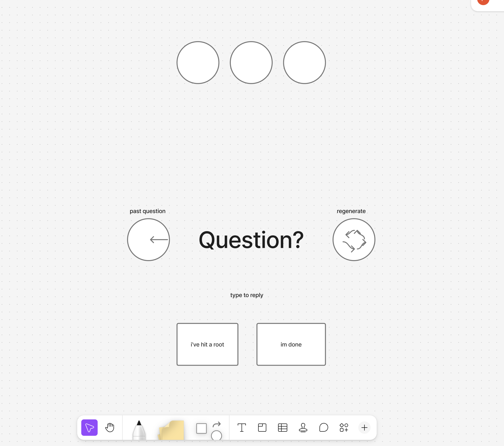
The onboarding is gentle and intentional. When you arrive, a quiet intro explains what Root does: “Root can help you dig deeper to help you uncover how you really feel. One question at a time. Continue digging until you feel you’ve reached the roots of a feeling, and Root will gently help you explore.” Then you hit “Start exploring” and you’re in. The first prompt is just: “What’s going on?”
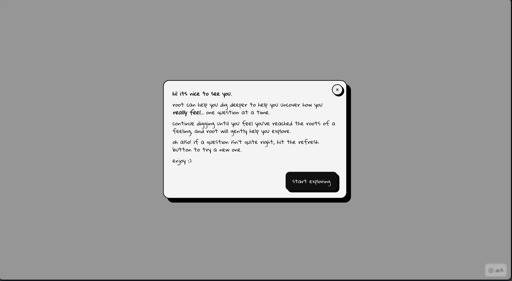
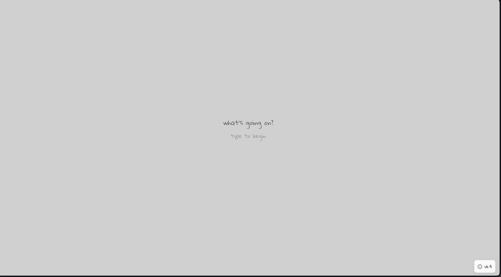
Building the Intelligence
Under the hood, Root uses a custom prompt connected to the Google Gemini API. The AI uses the full context of your conversation to determine the best next question. But it doesn’t just drill straight down from the first response — that was one of the biggest lessons from testing. Early versions would go from 0 to 100 immediately, which felt jarring and uncomfortable. I refined the prompt so that Root first spends time exploring what you’re going through, building context and understanding before it identifies where to start digging deeper. The pacing is everything. The tool needs to feel like a conversation, not an interrogation.
User Testing & Iteration
Testing with about a dozen users revealed two critical problems. First, the AI sometimes couldn’t tell when someone had hit a root — it would keep digging past the real insight, and the moment would be lost. To solve this, I added a “I’ve hit a root” button that lets the user signal they’ve landed on something real. When pressed, the AI shifts from digging deeper to gently exploring that specific feeling at the level you’re at. Second, sometimes the AI would latch onto the wrong thread. A user might mention three things in their opening response, and the AI would pursue one that wasn’t the most important. I added an “Explore something else” button so users can redirect the conversation without starting over. And if a particular question doesn’t land right, there’s a refresh button to generate a new one. These three controls — “I’ve hit a root,” “Explore something else,” and refresh — are the entire UI beyond the text input. They give the user just enough agency to guide the process without overcomplicating the experience.
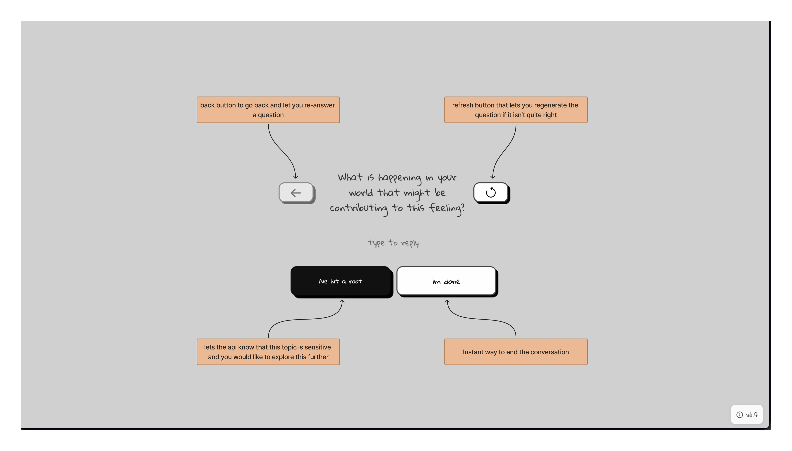

Key Design Decisions
No resolution screen. I intentionally chose not to include a summary, reflection, or wrap-up at the end of a session. Root isn’t trying to be a therapist. It doesn’t diagnose, it doesn’t advise, it doesn’t tell you what your problems are. It just asks questions. The unfolding is the experience — the insight comes from you, not from the tool. One question at a time. Showing one question on screen at a time was a deliberate constraint. It keeps the user focused on the current feeling rather than scrolling back through a conversation log. Each moment is its own space. A dedicated, distraction-free environment. The entire reason this project exists is that general-purpose AI interfaces don’t feel right for vulnerability. Root’s design strips away everything except the emotional work. That’s not a limitation — it’s the whole point.
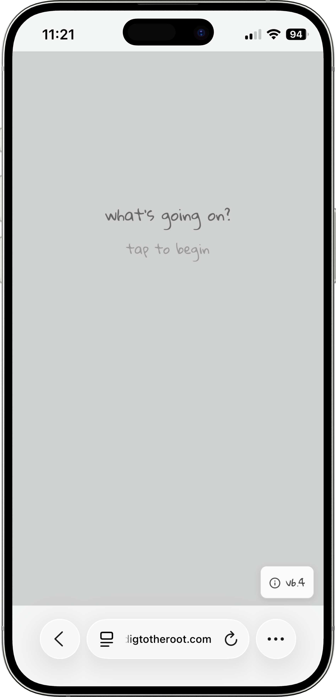
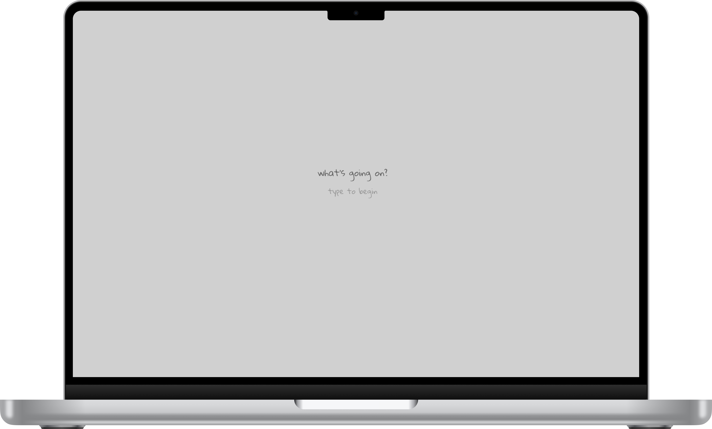
Outcome
Root is live and publicly available at digtotheroot.com. About a dozen people have used it so far, and the most consistent feedback is how quickly it gets to the real thing. People are often surprised by how fast they move past surface-level frustrations and arrive at something deeper and more honest. The emotional responses have been the most meaningful measure of success. Multiple users have been moved to tears during sessions — not because the experience is painful, but because being asked the right question at the right moment can unlock something you didn’t realize you were carrying. I use Root myself regularly. It’s become a genuine part of how I process what I’m going through. Every time I use it, it still gets me.
Reflection
Root is the most personal project in my portfolio. It came directly from my own experience in therapy, and building it forced me to think deeply about how design choices affect emotional safety. The color palette, the pacing of the AI, the decision to show one question at a time, the absence of a summary screen — every detail was in service of creating a space where someone could actually be honest with themselves. If I continue developing it, I’d want to explore how to make it useful for more people without losing the intimacy that makes it work. But even as it stands, it’s the project that best represents how I think about design: start with a real human need, strip away everything that doesn’t serve it, and build something that actually makes someone’s life a little better.
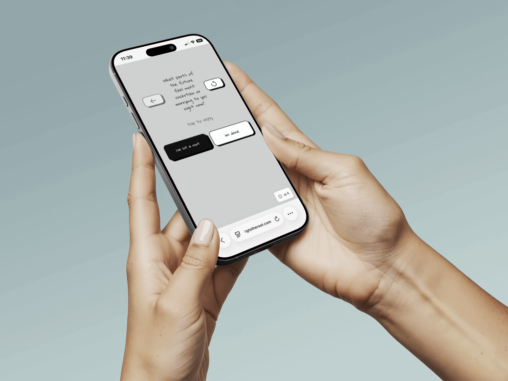